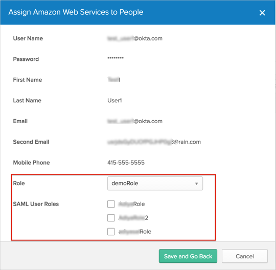
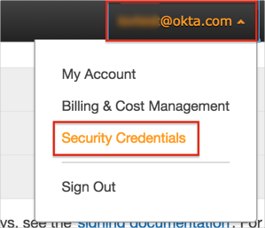
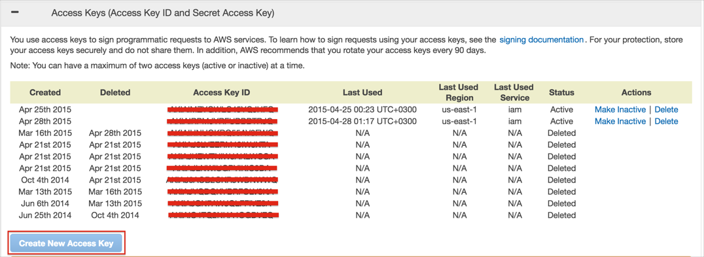
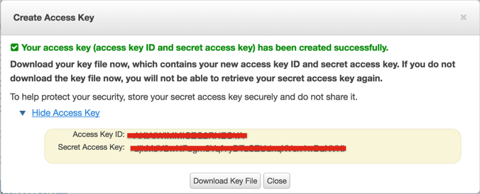

You need to enable Provisioning in order to configure SAML for the app, and to support multiple roles per chiclet. The Provisioning functionality has also been extended to Okta SSO Edition and Okta SSO Plus Edition for the Amazon Web Services Application.

Save the following IDP metadata as a .xml file, and upload in AWS when prompted.
Sign into the Okta Admin dashboard to generate this value.
Once the new Identity Provider is created, be sure to copy the Provider ARN when it displays, as shown below.
Select Roles from the list on the left, and then select Create New Role at the top.
Provide a friendly name for your role. For Role Type, select Role For Identity Provider Access, and then select Grant Web Single Sign-On (web SSO) access to SAML provider, as shown below.
Note: If you already have an existing role with the type Grant Web Single Sign-On (web SSO) access to SAML providers, you can modify it to work with the SAML provider you just created in the previous step.
Verify the role trust policy. Choose the access policy, such as permissions, that federated users will inherit when using this role.
Review your settings, and then select Create Role. You should be able to see the new role, as shown below.


To generate new Access Keys for Amazon Web Services:
Login to your Amazon Web Services account as an Administrator, click on your username at the top of the page, then select Security Credentials:

Click on Access Keys (Access Key ID and Secret Access Key) to expand section with Access and Security keys, then click Create New Access Key button:

A dialog with newly created keys appears. Click on Show Access Key link to expand the generated keys. Either make a copy of them or use the Download Key File option. These keys are required to setup Provisioning in Okta:

Optionally, you can specify the region that your users sign in to. To specify a region, on the Okta Dashboard for the Amazon Web Services application, select the Sign On tab. Enter one of the values shown below in the Default Relay State field. Continue to Step 11.
| Region | Default Relay State |
| US East (N. Virginia) | https://us-east-1.console.aws.amazon.com/console/home |
| US West (Oregon) | https://us-west-2.console.aws.amazon.com/console/home |
| EU (Ireland) | https://eu-west-1.console.aws.amazon.com/console/home |